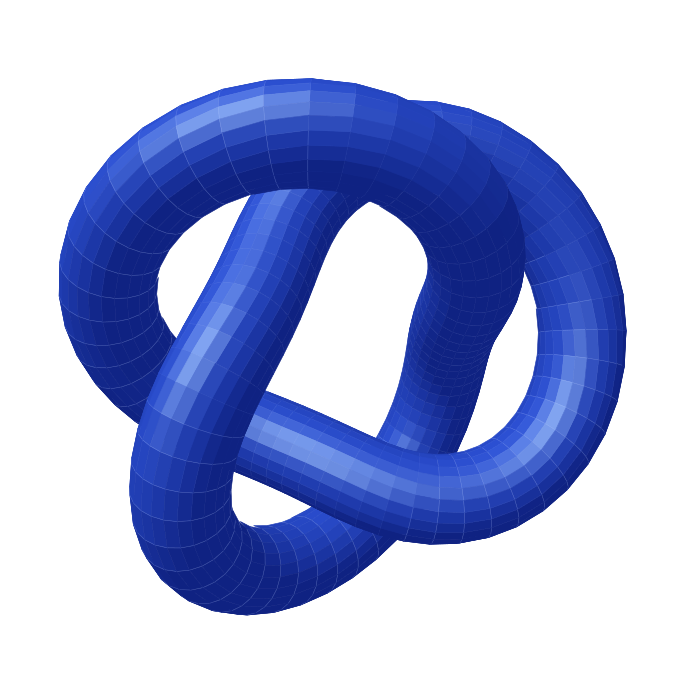

Erst verstehen.
Dann entwickeln.
Wir klären Anforderungen und Ziele, bevor wir uns auf eine technische Lösung festlegen.
Unabhängig im Denken. Persönlich im Dialog.
SOFTWARE · WEBDESIGN · BERATUNGAus Ihren Ideen werden digitale Lösungen.
Individuell entwickelt. Durchdacht gestaltet.
Und gemeinsam weitergedacht.

01 / Leistungen
Wenn Technik, Nutzererlebnis und unternehmerische Ziele zusammenspielen, entsteht das Richtige.
Ihre Arbeitsweise ist einzigartig. Ihre Software sollte es auch sein.
Maßgeschneiderte Anwendungen, Schnittstellen und Automatisierungen. Sauber konzipiert, zuverlässig umgesetzt und auf Ihre Abläufe abgestimmt.
Über Ihre Anforderungen sprechenEin digitaler Auftritt, der sich nach Ihnen anfühlt.
Moderne Websites mit klarer Struktur, überzeugender Gestaltung und responsivem Aufbau – damit Ihre digitale Präsenz auf jedem Gerät wirkt.
Über Ihren Auftritt sprechenDie richtigen Fragen stellen. Gute Entscheidungen treffen.
Technische Fragen verständlich machen, Möglichkeiten realistisch bewerten und die nächsten Schritte definieren. Unabhängig, pragmatisch und auf Augenhöhe.
Gemeinsam Klarheit schaffen02 / Der persönliche Ansatz
Ich verbinde analytisches Denken mit einem Blick für das Ganze – vom ersten Gespräch bis zur konkreten Umsetzung.
Wir klären Anforderungen und Ziele, bevor wir uns auf eine technische Lösung festlegen.
Nachvollziehbare Entscheidungen und eine klare Struktur machen Lösungen langfristig nutzbar.
Direkte Kommunikation, ehrliche Einschätzungen und ein gemeinsames Verständnis für das Ergebnis. Partnerschaftlich und auf Augenhöhe.
03 / Zusammenarbeit
Jedes Projekt ist anders. Ein transparenter Ablauf hilft, die richtigen Fragen zur richtigen Zeit zu stellen.
Wir sprechen über Ihre Ziele, Herausforderungen und Rahmenbedingungen.
MIT DEN RICHTIGEN FRAGEN.Aus Ideen werden Anforderungen, Prioritäten und ein realistischer Lösungsweg.
MIT EINEM KLAREN PLAN.Mit Fokus auf Qualität, Benutzerfreundlichkeit und nachvollziehbare Technik.
MIT SORGFALT IM DETAIL.Wir betrachten das Ergebnis im Einsatz und schaffen eine solide Basis für morgen.
MIT BLICK AUF MORGEN.04 / Der erste Schritt
Ob konkrete Aufgabe oder erste Überlegung:
Ein gutes Gespräch bringt Struktur in die Möglichkeiten.
Lassen Sie uns herausfinden, was für Sie sinnvoll ist.